Chapter 1
Introduction
This chapter has no exercises, hence there are no solutions to display. Instead, we delve into various ggplot2 add-on packages installed in Section 1.5
Installing packages and loading libraries
Code for installing the various packages required for this book: –
install.packages(c(
"colorBlindness", "directlabels", "dplyr",
"ggforce", "gghighlight", "ggnewscale", "ggplot2", "ggraph",
"ggrepel", "ggtext", "ggthemes", "hexbin", "Hmisc", "mapproj",
"maps", "munsell", "ozmaps", "paletteer", "patchwork",
"rmapshaper", "scico", "seriation", "sf", "stars", "tidygraph", "tidyr", "wesanderson"
))Interesting ggplot2 add-on packages
Let’s have a look at some important features of the packages: –
colorBlindness
The colorBlindness R package (Ou 2021) is specifically crafted to curate a diverse array of secure color palettes suitable for various plot types like heat-maps and pie charts. Its aim is to ensure that the resulting visualizations are accessible and comprehensible to all users. Additionally, it features a Color Vision Deficiency (CVD) simulator, a tool that facilitates the emulation of color vision deficiencies for improved accessibility.
Figure 1 shows a basic heat-map created with geom_tile() and nycflights13 (Wickham 2021) data-set with different colour schemes.
Code
library(colorBlindness)
g1 <- flights |>
group_by(month, day) |>
count() |>
ggplot(aes(x = day,
y = month,
fill = n)) +
geom_tile() +
theme_minimal() +
labs(y = "Month", x = "Day of the month") +
scale_y_continuous(breaks = 1:12,
labels = month.name) +
scale_x_continuous(breaks = seq(1, 31, 5)) +
theme(panel.grid = element_blank(),
plot.title.position = "plot")
g1 + labs(title = "Default ggplot2 colours")
g1 + scale_fill_viridis_c() + labs(title = "Viridis Colours")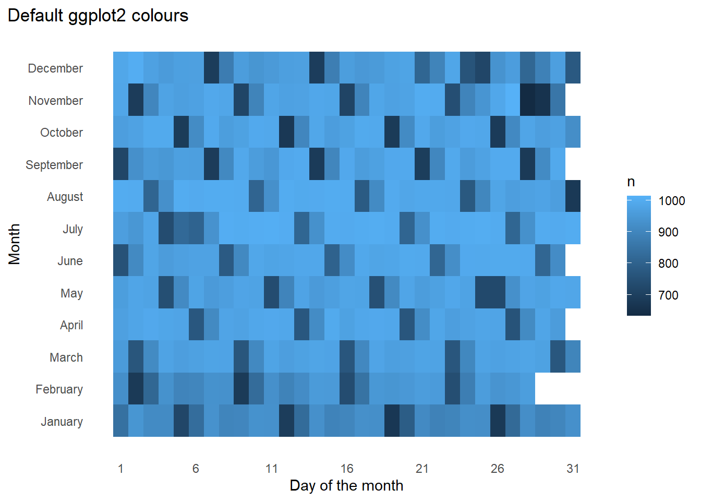

Now, using cvdPlot() from the package colorBlindness to check the plot’s view ( Figure 2 ) to different people.
Code
cvdPlot(g1 + scale_fill_viridis_c())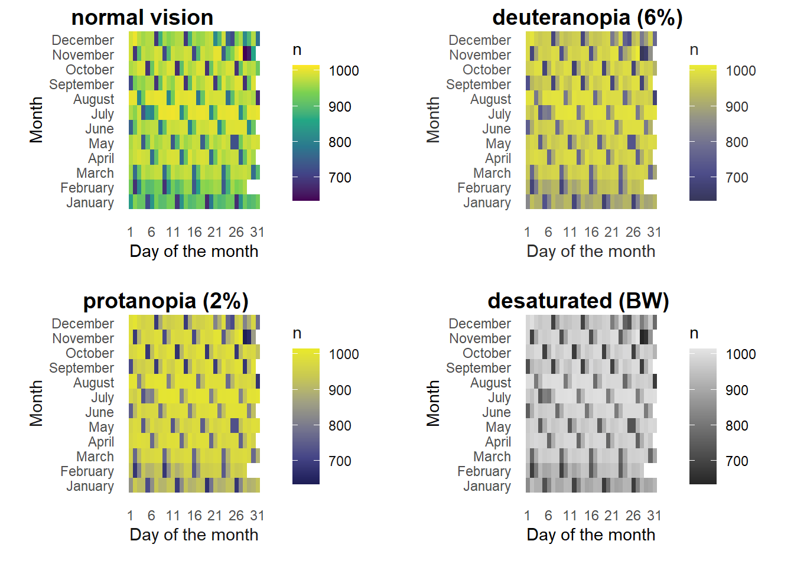
directlabels
The directlabels package (Hocking 2023) allows us to label plots easily, using various methods listed here. An example is shown in Figure 3 .
Code
library(directlabels)
g2 <- flights |>
filter(carrier %in% c("AA", "DL", "UA", "US", "WN")) |>
group_by(month, carrier) |>
summarise(avg_delay = mean(dep_delay, na.rm = TRUE)) |>
ggplot(aes(x = month, y = avg_delay,
group = carrier,
col = carrier)) +
geom_line() +
geom_point() +
theme_classic() +
labs(x = "Month", y = "Average Departure Delay (min.)") +
scale_x_continuous(breaks = 1:12, labels = month.abb) +
scale_color_brewer(palette = "Set1")
gridExtra::grid.arrange(
g2 |> direct.label(method = "angled.boxes") +
labs(title = "method = \"angled.boxes\""),
g2 |> direct.label(method = "last.polygons") +
labs(title = "method = \"last.polygons\""),
g2 |> direct.label(method = "top.bumpup") +
labs(title = "method = \"top.bumpup\""),
g2 |> direct.label(method = "first.polygons") +
labs(title = "method = \"first.polygons\"") ,
nrow = 2, ncol = 2)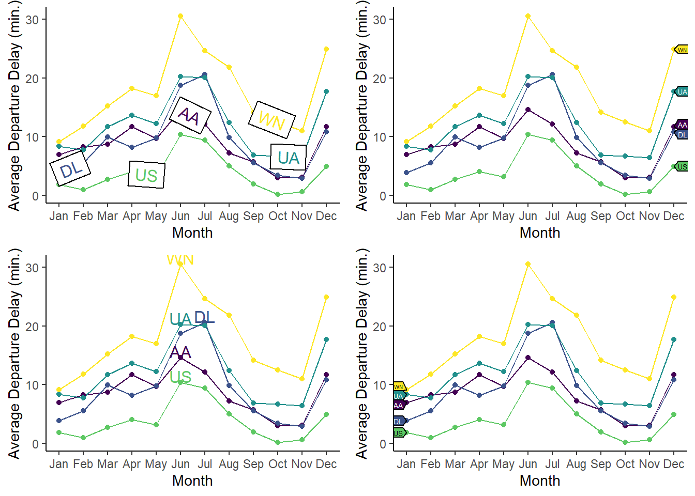
ggforce
The ggforce package (Pedersen 2022) is, in effect, a collection of geoms and other features to add on to the ggplot2 collection. Once particularly nice one is facet_zoom() as depicted in Figure 4 . This feature allows you to focus on a specific portion of the data by creating a zoomed-in view, while preserving the complete dataset in a separate panel. We can zoom in on either the x-axis, the y-axis, or both simultaneously.
Code
library(ggforce)
library(ggthemes)
flights |>
filter(carrier == "AA" & month == 1) |>
ggplot(aes(x = dep_delay,
y = arr_delay)) +
geom_jitter(alpha = 0.2) +
geom_smooth(se = FALSE, col = "red") +
facet_zoom(y = arr_delay < 0,
x = dep_delay < 0) +
labs(y = "Arrival Delay (minutes)", x = "Departure Delay (minutes)")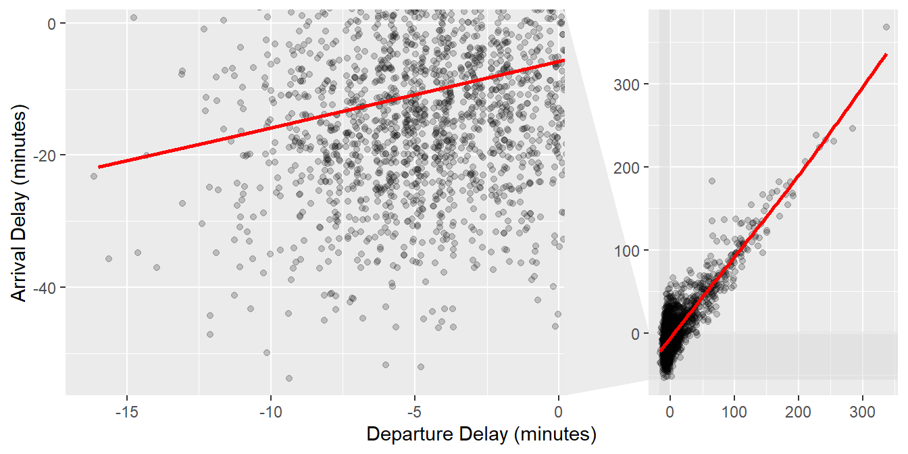
Another nice one is facet_wrap_paginate() which enables you to break down a faceted plot into multiple pages. You can specify the number of rows and columns per page, along with the page number you want to plot. The function will automatically generate only the appropriate panels. The Figure 5 shows an example with a for(){} loop.
Code
for (i in 1:2) {
print(
flights |>
filter(carrier == "AA") |>
ggplot(aes(x = dep_time,
y = dep_delay)) +
geom_jitter(alpha = 0.1,
shape = 19) +
geom_smooth(col = "red") +
facet_wrap_paginate(~ month,
nrow = 3,
ncol = 2,
scales = "free_y",
page = i) +
scale_x_continuous(limits = c(500, 2400)) +
theme_classic() +
labs(x = "Departure Time (hrs)", y = "Departure delay (min.)")
)
}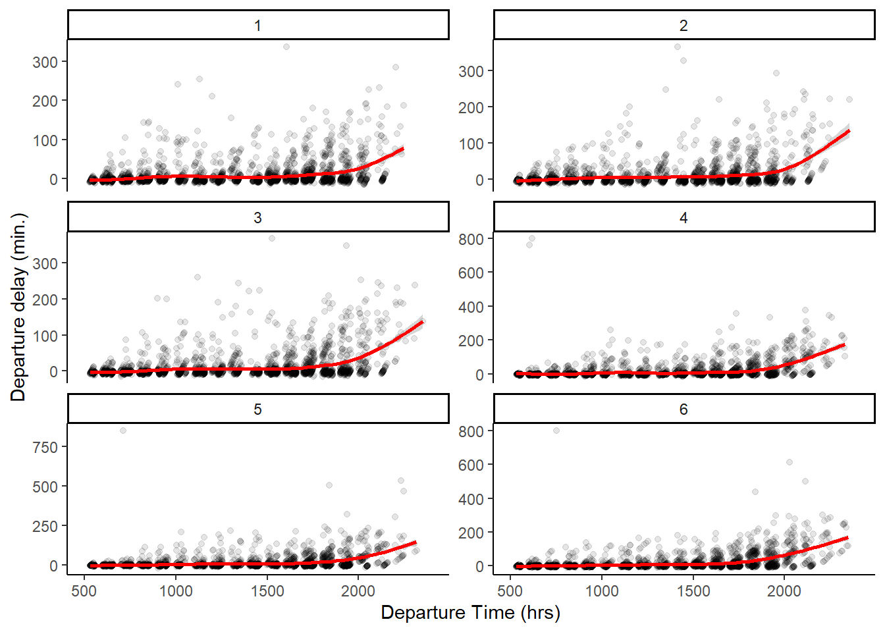
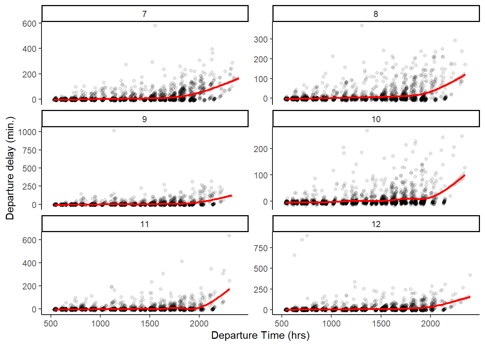
gghighlight
The gghighlight package (Yutani 2022) is an amazing tool to highlight only types of groups in a plot, and can even be used with faceting. The Figure 6 shows an example with a single plot, and Figure 7 shows the same example with faceting.
Code
flights |>
mutate(dep_hour = dep_time %/% 100) |>
group_by(carrier, dep_hour) |>
summarize(avg_delay = mean(dep_delay, na.rm = TRUE)) |>
ggplot(aes(x = dep_hour,
y = avg_delay,
col = carrier,
group = carrier)) +
geom_line(lwd = 1, alpha = 0.75) +
xlim(c(5, 24)) + ylim(c(-10, 300)) +
labs(x = "Departure Time (hr.)", y = "Average Departure Delay (min.)") +
theme_minimal()
flights |>
mutate(dep_hour = dep_time %/% 100) |>
group_by(carrier, dep_hour) |>
summarize(avg_delay = mean(dep_delay, na.rm = TRUE)) |>
ggplot(aes(x = dep_hour,
y = avg_delay,
col = carrier,
group = carrier)) +
geom_line(lwd = 1, alpha = 0.75) +
xlim(c(5, 24)) + ylim(c(-10, 300)) +
labs(x = "Departure Time (hr.)", y = "Average Departure Delay (min.)") +
theme_minimal() +
gghighlight::gghighlight(carrier == "AA")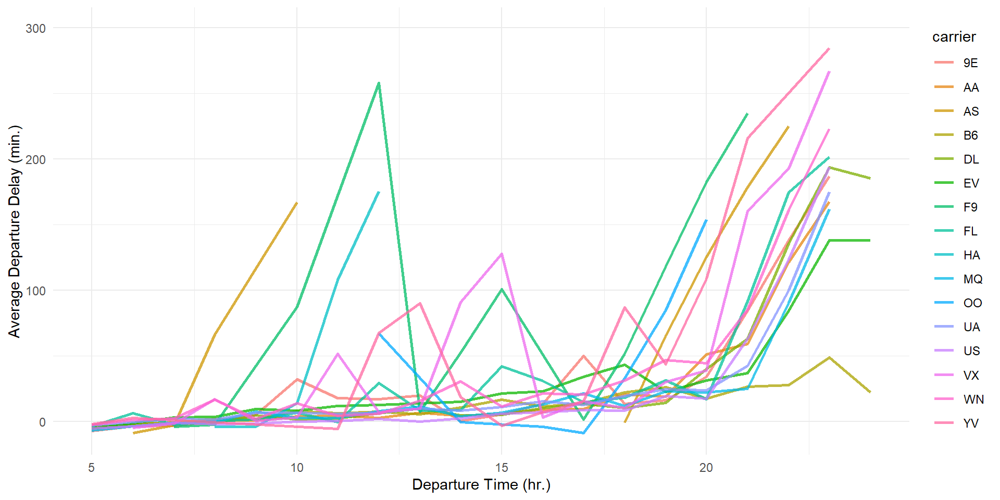
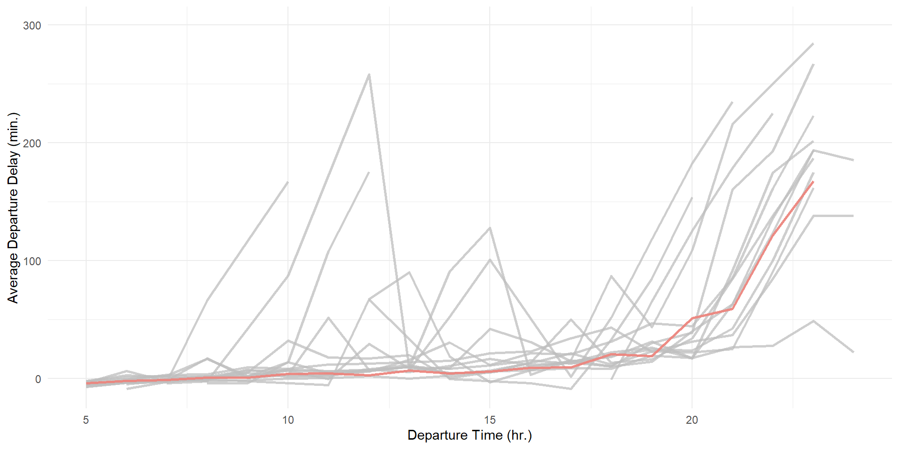
Code
flights |>
mutate(dep_hour = dep_time %/% 100) |>
group_by(carrier, dep_hour) |>
summarize(avg_delay = mean(dep_delay, na.rm = TRUE)) |>
ggplot(aes(x = dep_hour,
y = avg_delay,
col = carrier,
group = carrier)) +
geom_line(lwd = 1, alpha = 0.75) +
xlim(c(5, 24)) + ylim(c(-10, 300)) +
theme_minimal() +
gghighlight::gghighlight(carrier %in% c("AA", "UA", "US", "DL")) +
facet_wrap(~ carrier) +
scale_color_brewer(palette = "Dark2") +
labs(x = "Departure Time (hr.)", y = "Average Departure Delay (min.)",
title = "Comparing depature delays of 4 major carriers with others") 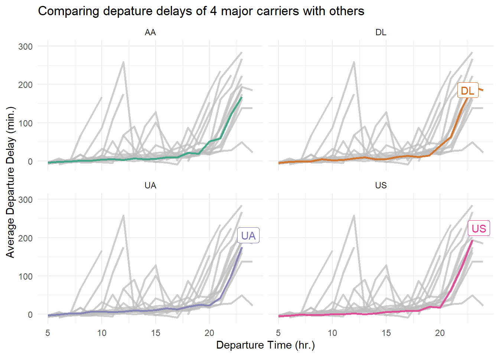
ggnewscale
The ggnewscale package (Campitelli 2023) allows you to use two or more different color scales (or, any other scales like fill, shape, linetype etc. in the same plot. The Figure 8 is directly copied from the website of the package, and credits to
Code
library(ggnewscale)
# Equivalent to melt(volcano)
topography <- expand.grid(x = 1:nrow(volcano),
y = 1:ncol(volcano))
topography$z <- c(volcano)
# point measurements of something at a few locations
set.seed(42)
measurements <- data.frame(x = runif(30, 1, 80),
y = runif(30, 1, 60),
thing = rnorm(30))
ggplot(mapping = aes(x, y)) +
geom_contour(data = topography, aes(z = z, color = stat(level))) +
# Color scale for topography
scale_color_viridis_c(option = "D") +
# geoms below will use another color scale
new_scale_color() +
geom_point(data = measurements, size = 3, aes(color = thing)) +
# Color scale applied to geoms added after new_scale_color()
scale_color_viridis_c(option = "A") +
theme_void() +
labs(title = "The ggnewscale package allows use of multiple color scales") +
theme(legend.position = "bottom")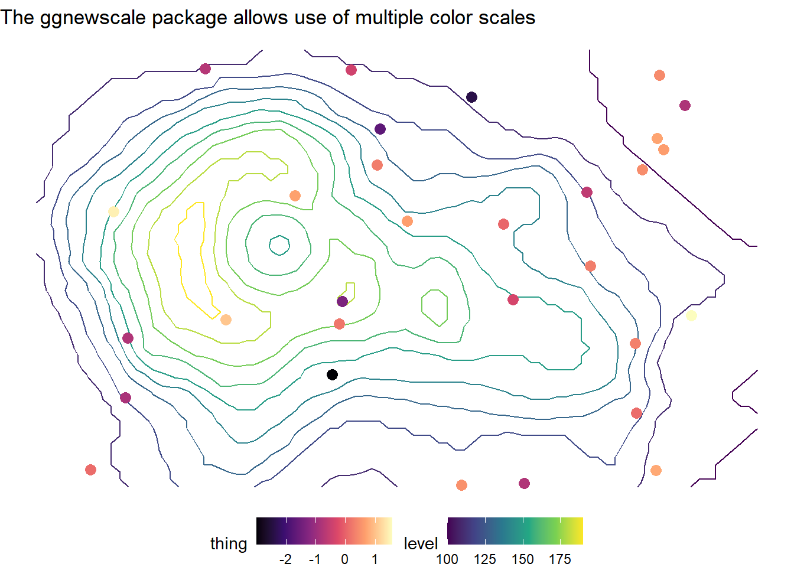
magick
The magick package (Ooms 2023) is a tool to handle and process images in R. It can be used to read .png , .jpeg , .svg and other images. While there are a plethora of features, the primary one I use are given below. Note that I have created the logo for this book solutions using magick and cropcircles .
Code
library(magick)
# Reading in the image
book_logo <- image_read("https://ggplot2-book.org/cover.jpg")
# Looking at the image in your computer's browser or default app
image_browse(book_logo)
# Editing the image to add 3rd Edition and Solutions Manual words
book_logo <- book_logo |>
image_annotate("Solutions Manual (& beyond)\nfor ",
color = "white",
location = "+80+125",
size = 30,
font = "helvetica",
weight = 700) |>
image_annotate("Third Edition",
strokecolor = "white",
color = "white",
boxcolor = "#EEB301",
location = "+75+480",
style = "italic",
size = 35)
# Saving the image
image_write(book_logo,
"book_cover.jpg",
format = "jpeg")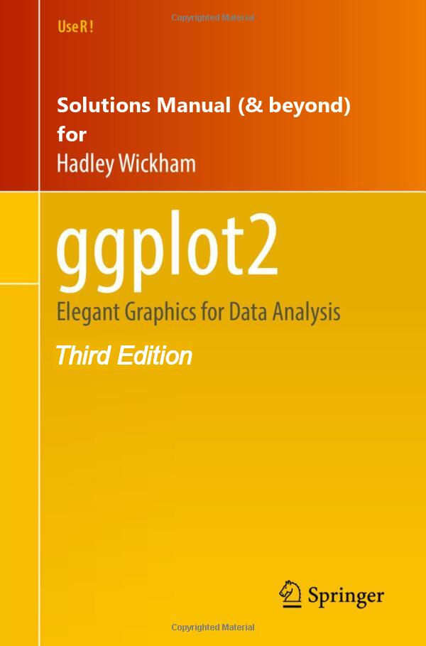
cropcircles
We can use the cropcircles package (Oehm 2023) to crop images into a rounded and hexagonal logo for my current book, as an example. (Note: the package generated a transparent background for me only in .png format).
We can also create hexagonal logos with this, as shown here.
Code
library(cropcircles)
# A round logo
round_logo <- book_logo |>
image_crop("600x600+0+30")
image_read(
circle_crop(round_logo,
just = "top",
border_colour = "black",
border_size = 7)) |>
image_write("book_logo.png",
format = "png")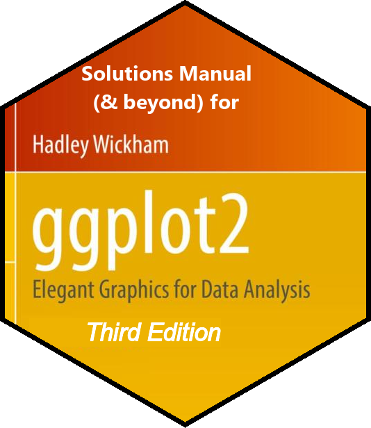
Code
library(magick)
# Creating a hex
book_logo <- image_read("https://ggplot2-book.org/cover.jpg")
book_logo <- book_logo |>
image_annotate("Solutions Manual \n (& beyond) for",
color = "white",
location = "+150+105",
size = 30,
font = "helvetica",
weight = 700) |>
image_annotate(" Third Edition",
strokecolor = "white",
color = "white",
boxcolor = "#EEB301",
location = "+75+480",
style = "italic",
size = 35) |>
image_crop("600x600+0+30")
image_read(
hex_crop(
book_logo,
just = "top",
border_size = 8,
border_colour = "black"
)
) |>
image_write("hex_logo.png")I intend to add more packages as and when I come across them. Watch out for this space in the future too.